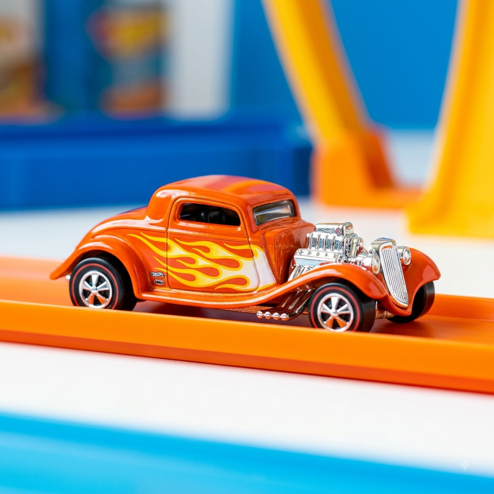

Os Originais "Sweet 16"
Por: Daniel Oliveira de Carvalho
Em 1968, a Mattel lançou os primeiros 16 modelos da Hot Wheels, conhecidos como "Sweet 16". Eles revolucionaram o mercado de miniaturas com tinta reluzente e rodas de baixa fricção.
Fonte: Mattel Collectors